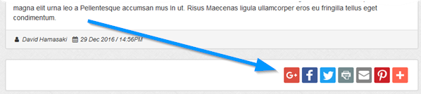

Maian Weblog supports addThis®, a popular FREE social share system that adds social share buttons to your journal entries. It is recommended you utilise the power of social networks. More info on AddThis
here.If enabled, appears as below on a journal page.
